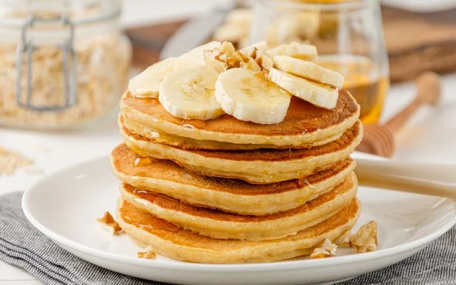

Panqueca de Banana e Aveia

Descrição
Descrição Esta panqueca de banana é a opção perfeita para um café da manhã
ou lanche rápido e nutritivo. Com apenas alguns ingredientes, você cria
uma massa naturalmente doce e incrivelmente fofinha. A ausência de farinha
branca e açúcar refinado a torna uma escolha leve e saudável. Sua textura
macia e o sabor suave da banana se combinam para criar uma experiência
deliciosa e satisfatória, seja servida pura ou com seus acompanhamentos
favoritos.
Ingredientes
- 1 banana madura
- 2 ovos
- 1 colher de chá de fermento em pó
- 1 pitada de canela em pó (opcional)
Modo de Preparo
-
Em uma tigela, amasse a banana com um garfo até obter uma consistência
de purê.
-
Em outra tigela, bata os ovos com um garfo ou fouet até que fiquem bem
misturados.
-
Combine o purê de banana e os ovos batidos. Em seguida, adicione o
fermento em pó e a canela (se for usar) e misture delicadamente.
-
Aqueça uma frigideira antiaderente em fogo baixo e unte com um pouco de
óleo ou manteiga.
-
Despeje pequenas porções da massa na frigideira, formando as panquecas.
-
Cozinhe por 2 a 3 minutos, ou até que a base esteja dourada e pequenas
bolhas comecem a aparecer na superfície.
-
Com uma espátula, vire as panquecas e cozinhe o outro lado por mais 1 ou
2 minutos, até que fiquem douradas.
-
Sirva as panquecas quentes, acompanhadas de mel, frutas frescas ou o que
preferir.
Página Principal